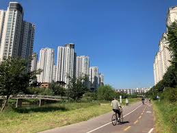
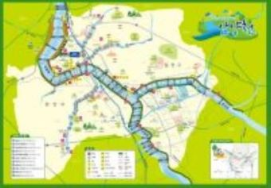

윈드브레이커라는 웹툰은 사실상 로드바이크 · 스포츠류의 웹툰이기도 하며, 픽스드 기어 (경륜) 바이크(픽시)를 타면서 벌이는 스트리트 라이딩을 다루고 있는 웹툰이다.
윈드브레이커는 자전거와 관련된 웹툰중 감히 명작이라 말할수 있을정도로 스토리 전개성, 작화 등등 웹툰의 필요한 요소들이 아주 잘 들어가있는데 이를 통해 10대들에게 자전거에 대한 관심을 크게 만들어 라이딩문화를 일으킨 웹툰이라 할수 있다.
이런 웹툰을 본 후 자전거 라이딩에대한 관심이 커져 지금은 취미로 자전거를 타고 있다. 안양시에는 이런 자전거 덕후들을 위한 자전거도로가 있다. 안양천에서 가장 가기 무난한 한강까지 연결되어 있어, 입문자도 쉽게 즐길수 있다.
 안양에서는 다양한 맛집을 찾을 수 있습니다. 특히 안양의 특산물인 안양 찐빵은 많은 사람들에게 사랑받고 있습니다.
이렇게 우리 안양시의 자전거도로와 자전거에 관련된 웹툰(을)를 추천해봤는데 여러분도 웹툰에 관심을 가지고 한번 읽어보시는것도 괜찮을거 같습니다. 정말 강추!